Choose
Explore a curated selection of authentic Japanese garments and find the colors, pattern, and story that speak to you.
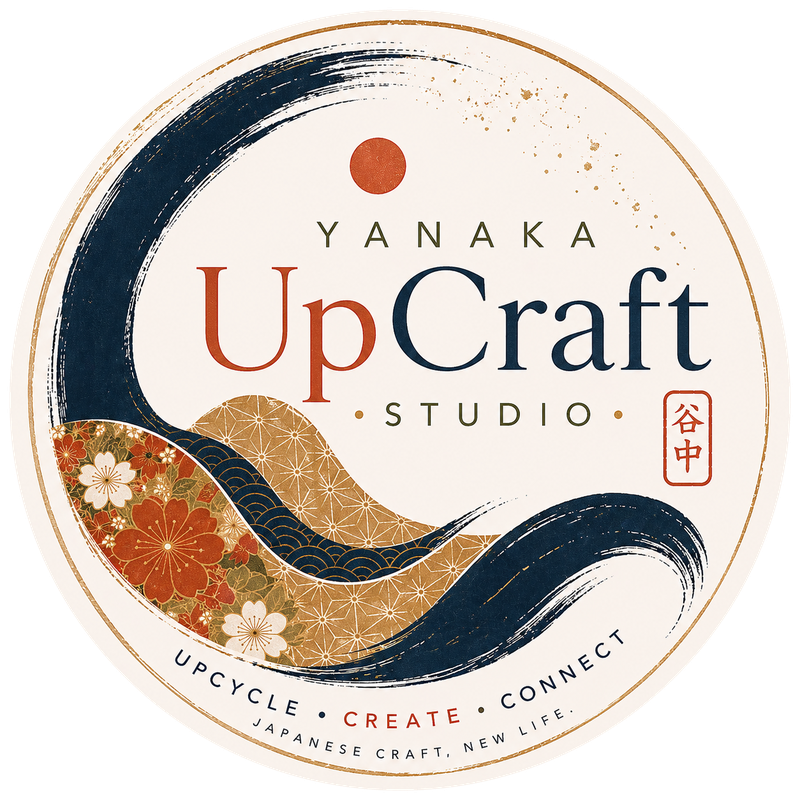
Yanaka UpCraft StudioA fun craft experience in old Tokyo 東京の下町で楽しむクラフト体験
Upcycle a real kimono into a new creation to take home in this relaxed, informative, one-hour hands-on workshop.
Beginner friendly · Materials included · Presented in English (Japanese OK)初心者歓迎・材料費込み・英語で開催（日本語対応可）
Give the beautiful past a cherished future 美しい過去を、大切な未来へ。
Inside our welcoming neighborhood studio, real kimonos with past lives begin new ones. We’ll guide you step by step as you turn something with history into an object that is useful, personal, and made to last.
Every material used in our workshops comes from an actual kimono, yukata, or obi. No sewing experience is needed—only curiosity. Come alone, with a friend, or as a family, and leave with a handmade memory of Tokyo and a new story to carry home.
The experience
Spend a relaxed, informative hour choosing from real kimono, yukata, and obi, then transform part of its beautiful past into something personal to take home.
Explore a curated selection of authentic Japanese garments and find the colors, pattern, and story that speak to you.
Enjoy friendly, hands-on guidance as you upcycle your chosen kimono into a new creation. Beginners are completely welcome.
Leave with your finished piece—a meaningful reminder of Tokyo, made by you from a real kimono.
The workshops ワークショップ
Each relaxed session includes guidance, tools, and a curated selection of real kimonos, yukata, and obi ready for a new life.
01
Choose a real kimono with a past and give it a new life as a one-of-a-kind piece.
02
A personal workshop for families, friends, and small groups exploring Tokyo together.
Plan your experience
A personal, hands-on introduction to kimono culture and creative upcycling in Yanaka Ginza.
Your workshop itinerary
Meet your host in our relaxed and welcoming Yanaka Ginza studio.
Get to know your host and the other participants before beginning.
Enjoy a short, engaging presentation about kimono, traditional Japanese textiles, patterns, and their cultural meaning.
Your host introduces the day’s craft project, materials, and steps.
Choose and transform authentic kimono material into your own handmade piece, with guidance throughout.
Celebrate your finished creation and take photos as a memory of your workshop.
Enjoy time browsing available kimono and craft items and discover more unique Japanese treasures.
Take home your handmade creation and a special memory of your time in Yanaka Ginza.
What’s included
Not included
Important information
Each one arrives with its own pattern, texture, and past life.
Thoughtful, step-by-step support as you begin its next chapter.
Take home something personal—not another souvenir.
From the studio
Real studio and workshop photography will show each kimono’s journey into something new.
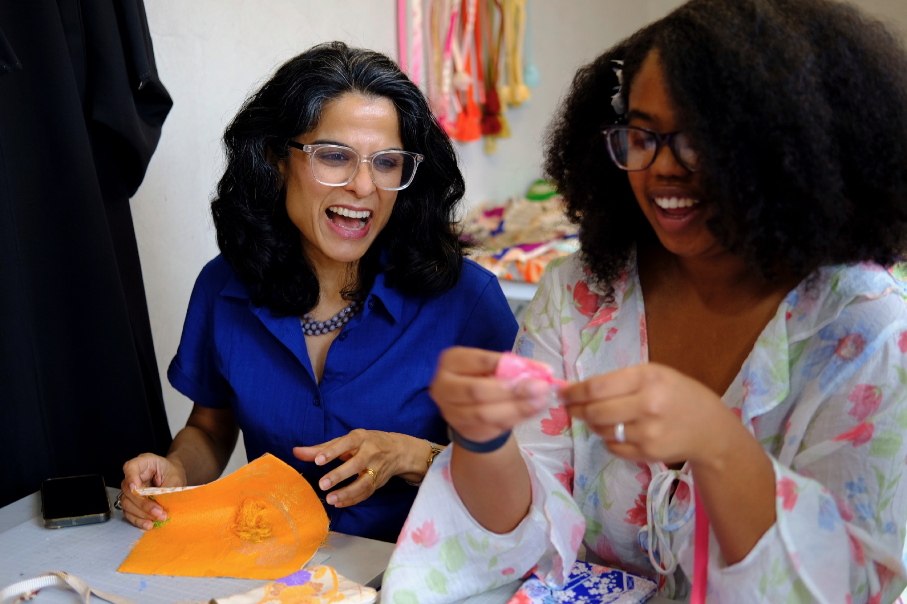
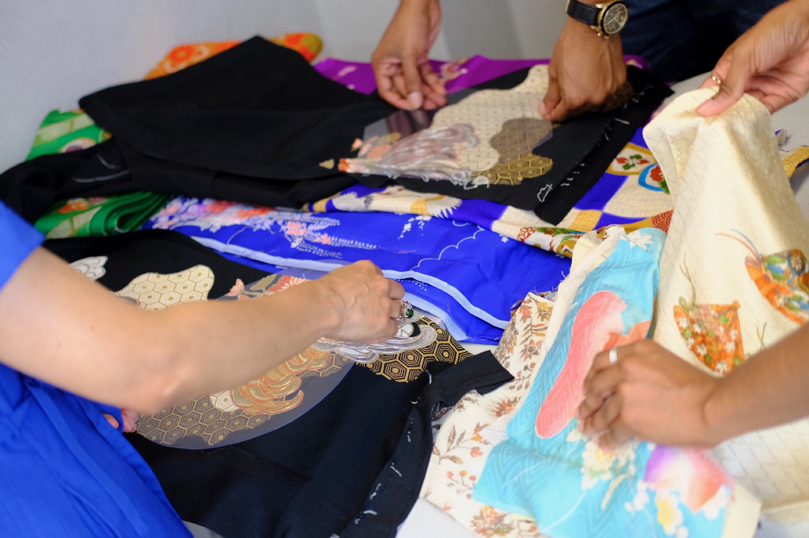
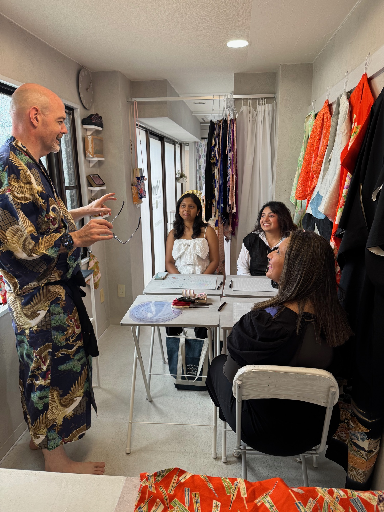
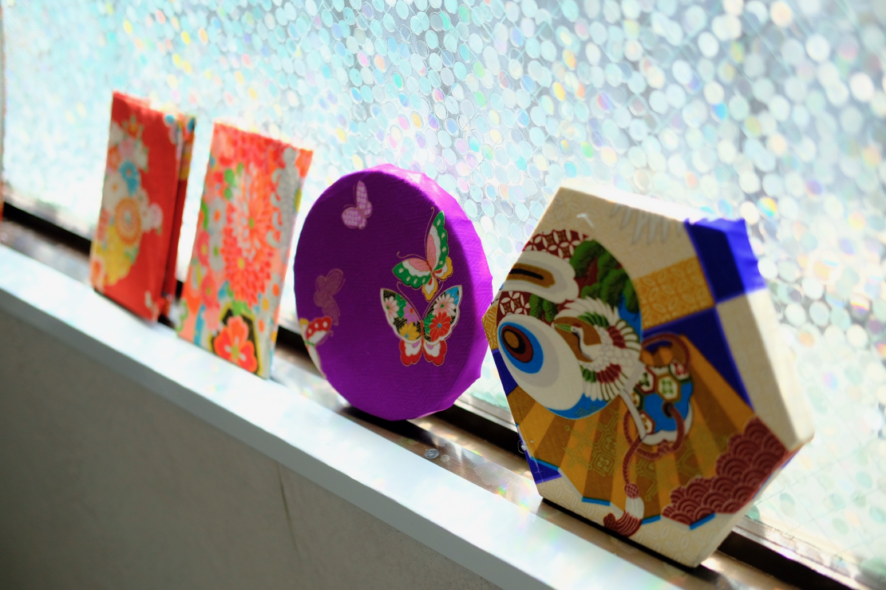
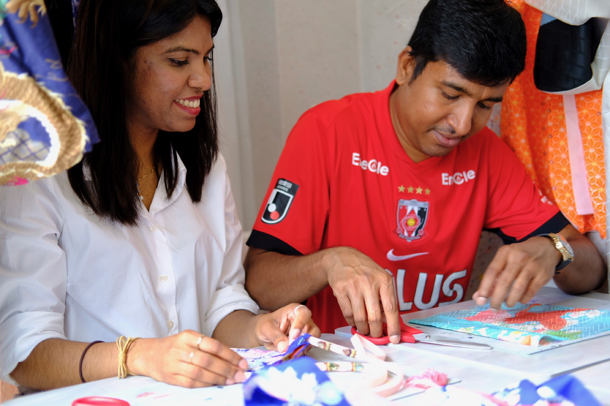
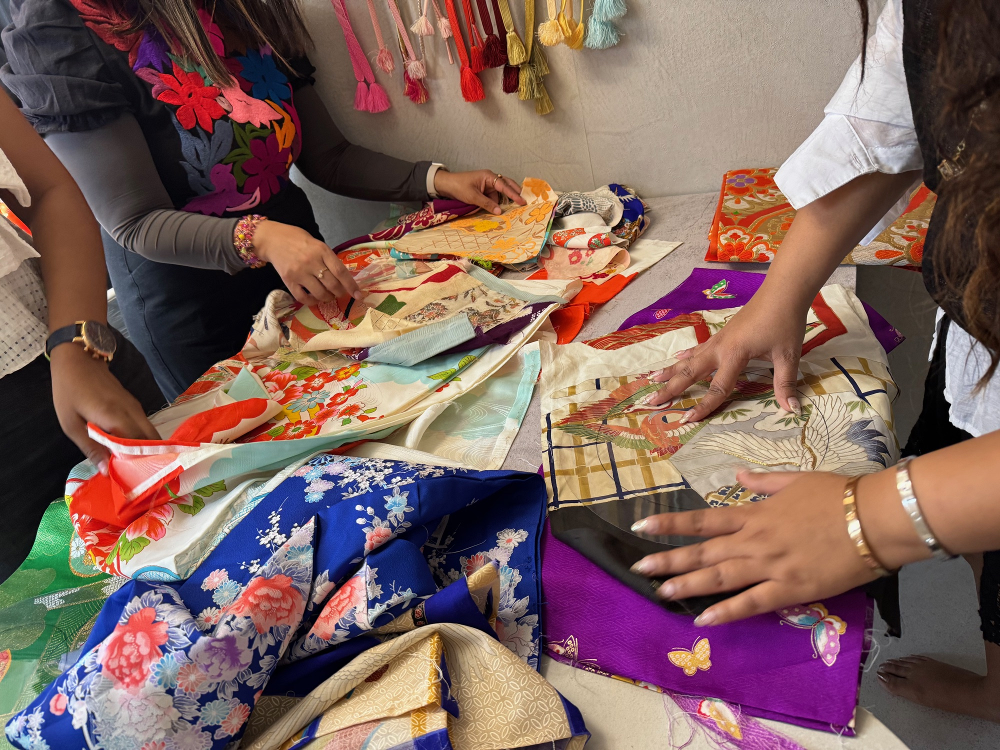
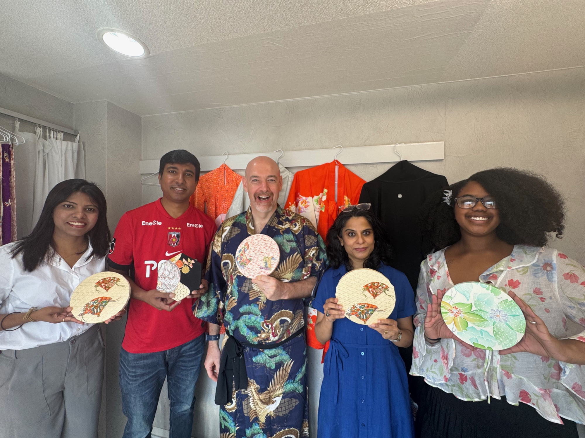
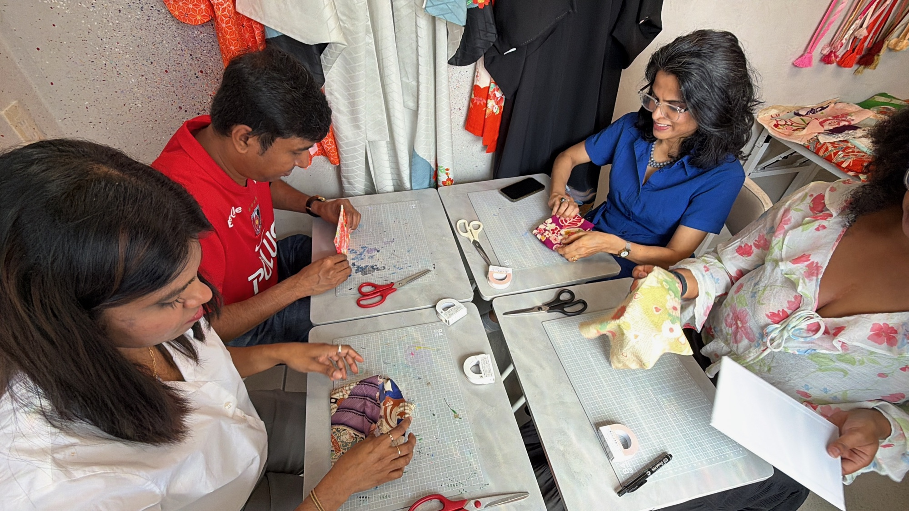
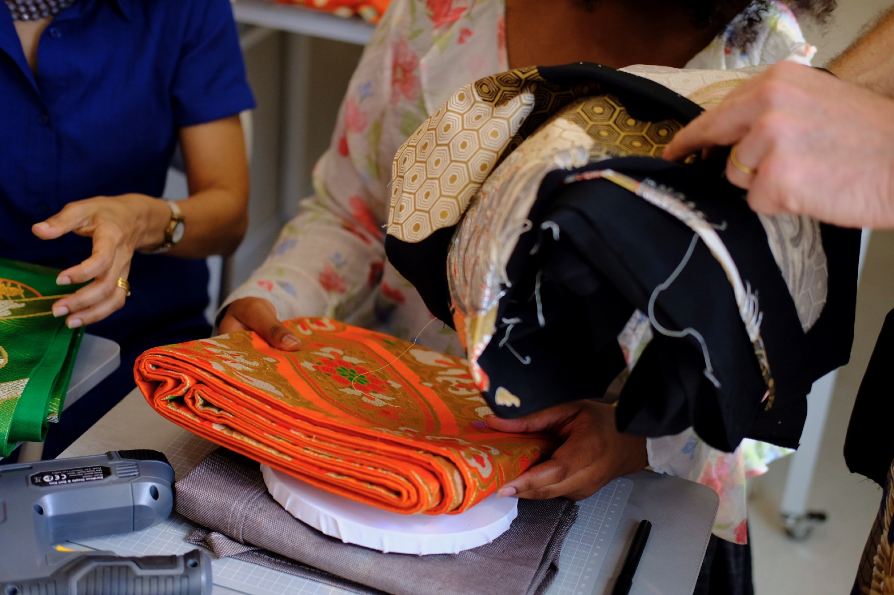
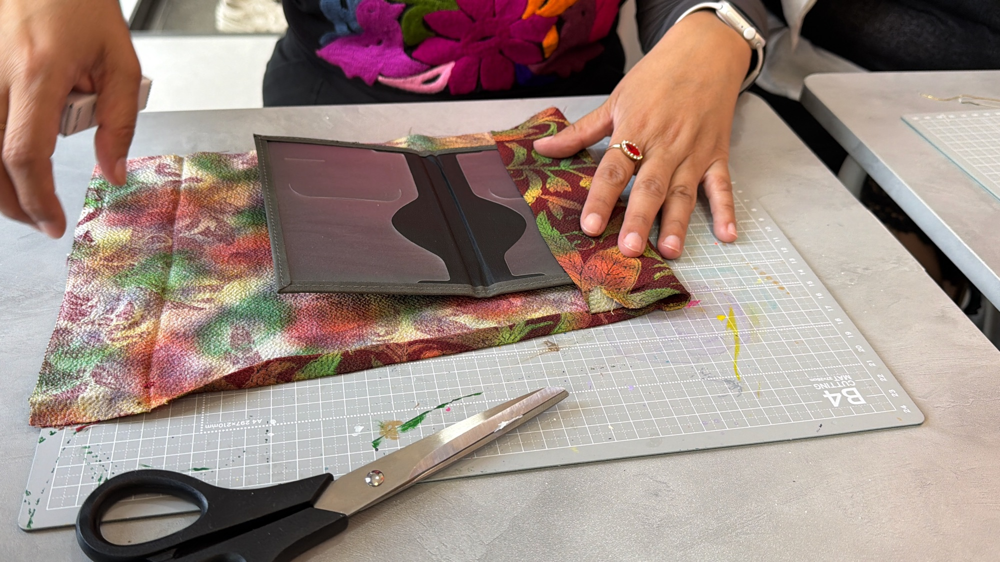
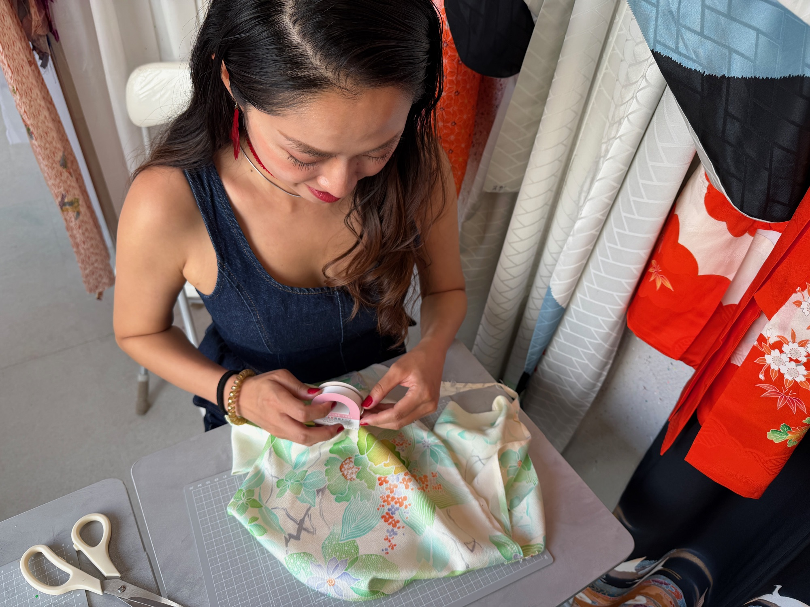
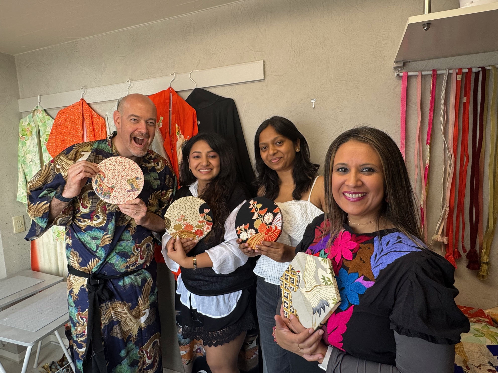
“Give the beautiful past
a cherished future.”
Good to know
Still wondering about something? We’ll be happy to help before your visit.
Ask us a question ↗Not at all. Workshops are designed for complete beginners, with friendly guidance throughout.
All tools and workshop materials are included. Every material used in our workshops comes from an actual kimono, yukata, or obi. You’ll choose one in the studio and help its story continue.
Yes. Workshops are presented in English, and Japanese is also OK.
Standard workshops are for 2–4 participants. Solo visitors are welcome to inquire about joining an available session. Private bookings are available for the equivalent price of 4 participants, and groups of 4 receive a 5% discount.
Yes. Guests under 12 must be accompanied by an adult.
Please cancel at least 3 days before the scheduled workshop and confirm applicable refund conditions before booking. Rescheduling may be possible when another date or time is available. Late arrivals and no-shows are non-refundable. If the workshop is cancelled by the operator, a refund will be provided.
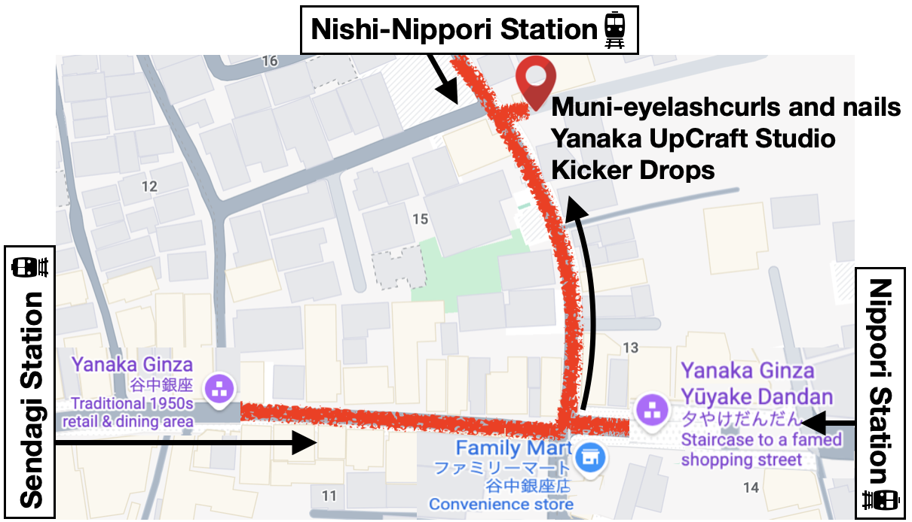
Click the map to open Google MapsYanaka Ginza access 谷中銀座へのアクセス
Yanaka Ginza is known for its traditional shopping street and relaxed neighborhood rhythm—a fitting home for making something by hand.
Search for Yanaka UpCraft Studio in Google Maps and look for our studio sign. The venue is a short distance from FamilyMart.Googleマップで「Yanaka UpCraft Studio」を検索し、スタジオの看板を目印にお越しください。
Upcoming workshops 今後のワークショップ日程
All sessions begin with four available places. Email us with your preferred date, time, and number of guests.
Availability is confirmed when you receive a reply from the studio.
Take a new story home 新しい物語を持ち帰ろう
¥9,900 per person, including tax / お一人様・税込
Check the upcoming schedule, then email your preferred date, time, and number of guests. Please book at least 2 days in advance.
Book a workshopワークショップのご予約はこちらGroups of 4 receive a 5% discount.